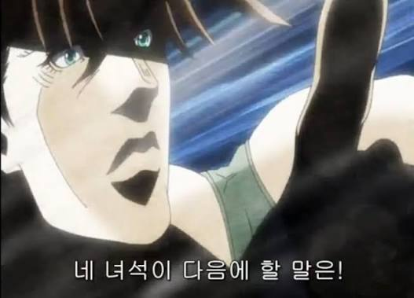
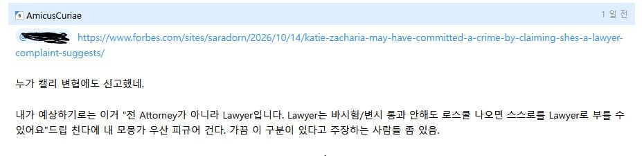
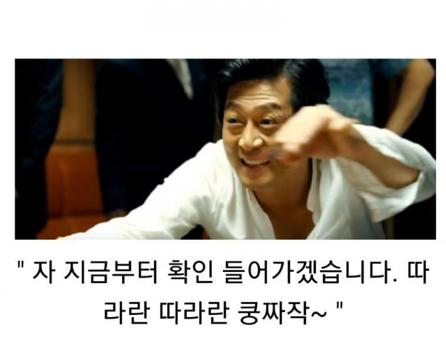
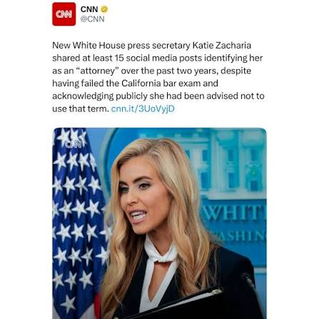

관련 글: https://www.dogdrip.net/729656605
최근에 우리 한결같은 트럼프는 금발 백인 여자를 백악관 대변인으로 임명함
문제는 여러 자질 논란 및 스스로를 변호사로 말했지만 변호사시험 합격한 기록이 없고 중국에서 쳤다는 이상한 대답만 함
대부분의 국가 및 주에서는 변호사 자격없이 스스로 변호사라 말하는건 범죄다. 무면허 의사랑 같은거지.
여기서 꼬롬한 냄새가 나고 예측가능한 변명이 있었다.




" ‘attorney’나 변호사를 뜻하는 경칭인 ‘esquire’는 사용하지 말라는 조언을 받았지만 ‘lawyer’라는 표현은 괜찮다는 말을 들었다고 설명했다. 그러나 CNN은 15일 재커라이어가 최근 2년간 소셜미디어 게시물 최소 15건에서 자신을 ‘attorney’라고 소개했다고 보도했다.
[출처] - 국민일보
[원본링크] - https://www.kmib.co.kr/article/view.asp?arcid=9000023150&code=61131111&sid1=vod"
심지어 바보 이전에 Attorney라고 스스로 부른 기록이 발견됨
모몽가 피규어 지킴
---
그렇습니다 여러분은 지금 내가 이거 예견했제 자랑글을 보고 계십니다.
너 이 현명한 청년